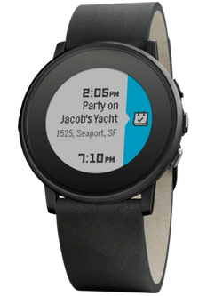
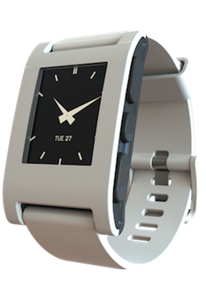

Cosplay Contest
It's our tremendous pleasure to host the Japan Society of New Orleans at NOLA Gaming Fest and to support them in their endevour to bring all things Japanese to New Orleans. JSNO will be hosting a cosplay contest that will see the best dressed super fans going home with some amazing prizes.
See all the details below, and if you have any questions, send an email to Jennifer Gaudet at jgaudet09@yahoo.com
Registration
- Registration for the Cosplay Contest will be filled out at NOLA Gaming Fest on Saturday, January 2nd at the Pontchartrain Center. The registration desk will be located at the Japan Society of New Orleans table. Registration will be open on Saturday from 10 A.M. to 1 P.M. before the contest.
- The person in charge of registration for the contest will hand an entry form to each cosplayer. Fill out the entry form completely. Once that is done, you will receive a number. Keep this number with you at all times because that is your position in line for the contest.
- There will be no more than 40 entries accepted into the contest. It will go by a first come, first serve basis. Register as soon as possible because once all 40 spots are filled we will be taking no more entries.
Pre-Judging
- Pre-judging is mandatory for all contestants. It will be available at the Japan Society of New Orleans table after you have registered for the cosplay contest. Pre-judging is a way for the judges to see and admire your cosplay up close before the contest. This will give the judges a better idea of your cosplay and accurate judging.
- The judges will be looking for costume design, sewing technique, and craftsmanship at pre-judging. If your cosplay does not have one of these categories you will NOT be penalized. Judges will only be judging the aspects of the cosplay that apply. For example, if you are cosplaying a character that has no sewing you will not be judged on sewing technique and it will not affect your judging.
- Pre-judging will only last from 2 to 3 minutes. After the judges are done with judging your cosplay you may go enjoy the rest of Gaming Expo. Only 20 of the 40 entries will be contestants in the cosplay competition. We will notify contestants who have made it to the contest stage via text message.
Pre-Meeting
- The 20 finalists will need to meet behind the main stage an hour before the contest (3 P.M.). If you did not register beforehand at the Japan Society of New Orleans table you cannot be a part of the contest, no exceptions. Please don’t be late! There will be a crew there to help you lineup in numerical order; using the number you were given at registration. DO NOT switch numbers with fellow contestants because the registration forms will be in the order we received them for the MC to announce you on stage.
- Lining everyone up will take time so please pay attention and patiently wait for the contest to start once the line is formed. While you are in line there will be someone to promptly go over the rules and to give you directions. There will be no breaks since we are only requesting your presence an hour before the contest. We are predicting a short wait, if any at all.
Cosplay Contest
- The audience will be getting seated and settled as the contest gets closer. The contest will be starting at 4 P.M. The program is as follows:
- Welcoming
Cosplay
- Contest
Judges Deliberation
- Awards Ceremony
- Closing Statement
- We ask that all contestants stay for the whole cosplay contest. If by some emergency you must leave the NOLA Gaming Fest, please notify a cosplay staff member before you leave.
The awards are categorized as follows:
- First Place – Pebble Time Round Black Nero (at a value of $250)
- Second Place – Pebble Time White (at a value of $200)
- Third Place – Arctic White Pebble (at a value of $100)
- There will be no specific category awards. Just come out and have fun.
|  |
 |
 |
Cosplay Contest Rules
- Your cosplay must be family friendly. There should be no indecent exposer such as the chest and bottom areas. The staff of Japan Society of New Orleans has the right to deny your entry if they deem it inappropriate or implying obscenity, based on PG-13 rating. Male and/or female pasties are not considered acceptable outer wear and are not allowed. Full body painting requires that you must have a functioning top (for females) and bottom (males and females) that covers as much as a modest swimsuit. Latex pasties or undergarments do not count as acceptable coverage. If you must cosplay a character that may break these rules we ask that you modify the cosplay for these standards. Modification will not affect your judging.
- The contest is open to ages 16 and up. This age limit only applies to the cosplay contest, not the event itself. Some form of photo ID must be presented when registering for the contest at the registration table.
- You can compete as a solo contestant or as a team. Team contestants will not have an advantage or disadvantage over a solo contestant. Judging will be on equal terms.
- Each contestant will have 30 seconds on stage to show their cosplay. Cosplayers will walk-on to music of our choosing. A mic will not be provided. No nudity, excessive violence, or sexual themes or implied obscenity will be tolerated on stage. Remember, PG-13. Any violation of these rules will result in immediate disqualification.
- The judges will be looking at presentation when contestants enter onto the stage. Bring your awesome poses with you.
- All props such as guns, swords, wings, and other danger hazards will be screened and approved at pre-judging. Use good judgments; if it can hurt someone don’t bring it. If you bring a prop that is deemed unsafe you must retire it or you will no longer be able to participate in the cosplay contest.
- Just because this is a gaming expo doesn’t mean you are limited to games. Cosplay = costume + play. Your costume may draw inspiration from any genre, book, anime/manga, video game, or historical/cultural source. Have fun with it!
- If you are not in line before we are ready to start the contest you are automatically disqualified from the contest. If you are usually a late person, get to the stage before the hour pre-meeting to guarantee attendance.